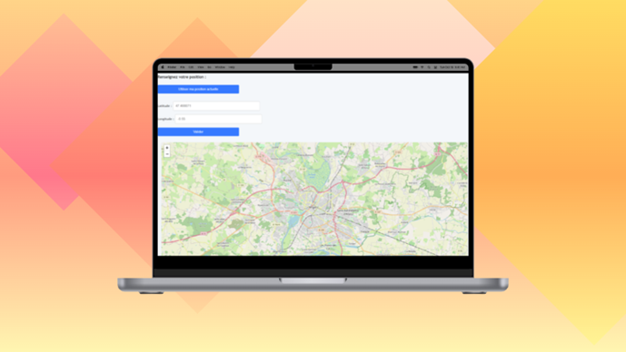

Tous au Sport !

Technologies : HTML, CSS, JavaScript
Contexte : Hackathon : 4 jours pour réaliser le projet de site web qui cartographie les différents équipements
sportifs de la ville d'Angers ainsi que ses parkings et nombre de places en temps réel.
Tous au Sport ! est un site web destiné aux citoyens de la ville d'Angers souhaitant consulter les équipements sportifs disponibles et leur accessibilité. L'objectif était de rendre l'information municipale claire et exploitable rapidement.
Fonctionnalités intégrées :
- Cartographie des infrastructures sportives (gymnases, stades, city-stades, etc.)
- Affichage d’icônes pour les équipements, parkings, bornes vélo
- Indication de disponibilité simulée en temps réel
Stack technique :
- JavaScript pur pour le filtrage et le tri
- Leaflet pour la carte interactive
Ce projet m’a appris à gérer des données géographiques, manipuler et structurer efficacement un front-end clair pour des utilisateurs non techniques.
← Retour aux projets